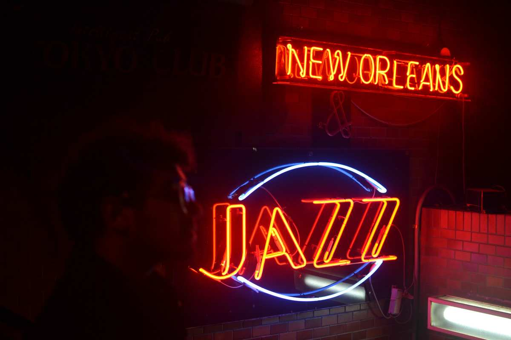
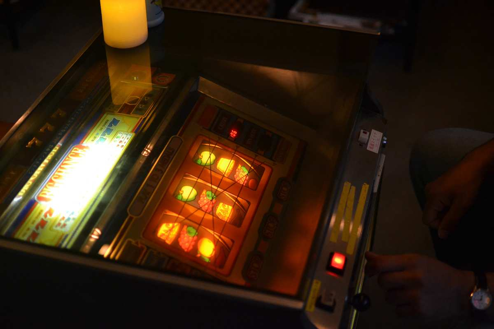
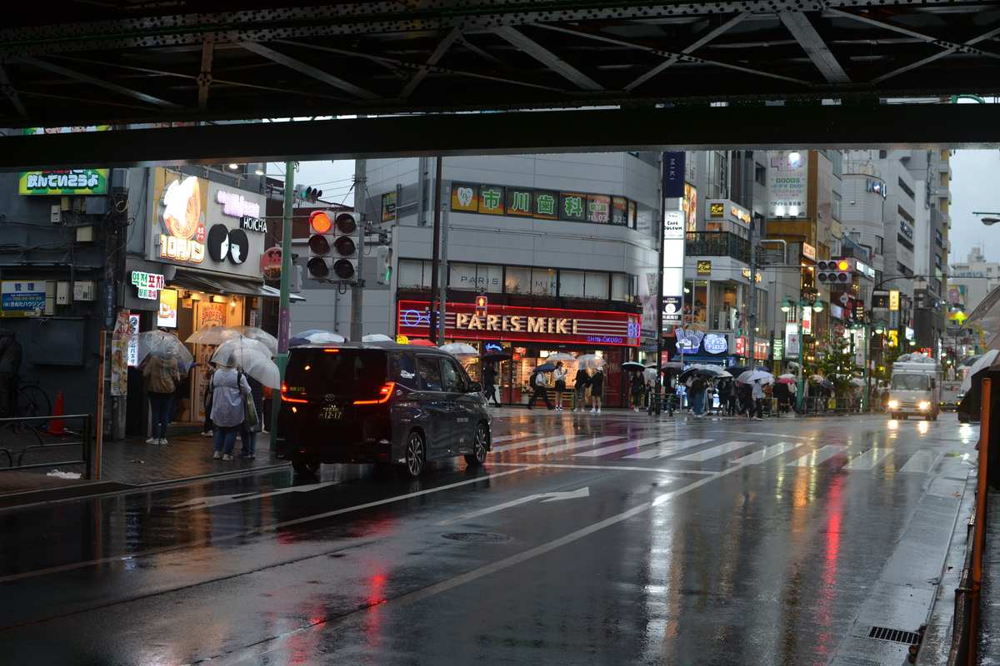
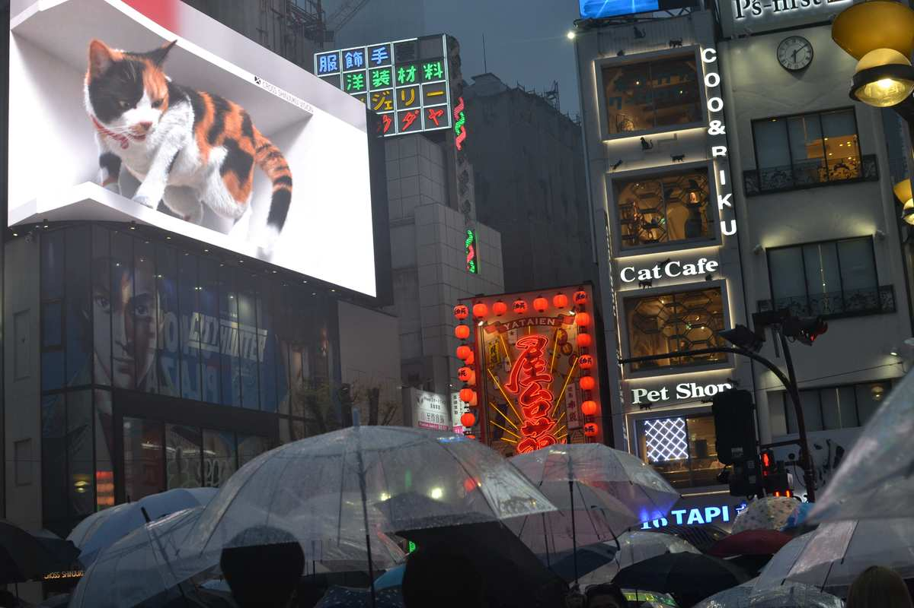

The lead story
A frequency for everything the mainstream left out.
Marginalised voices first. Rare pressings, unfiled reports, and conversations that never made it into the official record — on a frequency nobody cleared for public consumption.
On the schedule
The dispatch
Get the new shows before anyone else.
New shows, guest slots and one-off specials, sent to your inbox from hello@topsecret.fm. No spam, unsubscribe any time.
Keep it on air
Support the station.
topsecret.fm is independent radio. If you like what you hear, chip in whatever you can to help keep the signal going.
From the field




From the desk
Deep crate excavations.
Pressings you won't find on streaming, surfaced from record fairs and boxes nobody labelled right.
File 02 — DebriefThe week, filed and annotated.
The week's headlines, heavily annotated. Half briefing, half bit.
File 03 — RedactedOff the record, in tone if not in fact.
Long-form talk. Guests, rants, tangents.
Side projects — Merch & Hot SauceCome on air. Leave with a drop.
Guests get merch, the best sessions get a numbered drop — and listeners can still win the sauce.
How we broadcast
No filter
We say the thing. Satire only lands when nobody's holding back.
No schedule
Segments surface when they're ready, not on a programming grid.
No permission
If it's obscure enough to need a search warrant, it's in rotation.
No boring
If a segment isn't earning its airtime, it gets cut. Simple as that.
Learn more
Meet the crate diggers
Who's behind the console, and how the archive gets built one estate sale at a time.
About the stationBehind the mic
How the talk segments come together — and who's cleared to go off script.
Go to RedactedWanted
Got a playlist worth playing?
Send it our way — as an actual file (M3U, CSV, a note on the back of a napkin, whatever) or just list it out in an email. If it's good, it goes in the rotation.
Email your playlistListeners
Talk to other listeners.
Crate finds, hot sauce chat, and whatever else comes up between segments — join the channel, or leave a note on the Pinboard.
Keep the frequency on air
Like what you're hearing? Send ETH straight to the station wallet.
0xbfe60b921476D15c029e28c05403473b8cE8F4c1
Leaked tapes are a crime against musicality.
Bootlegged sets, ripped masters, and unauthorised leaks will be found and punished, personally, by our DJs. They are not archived here, and they are not over on SoundCloud Discover either. Don't go looking.